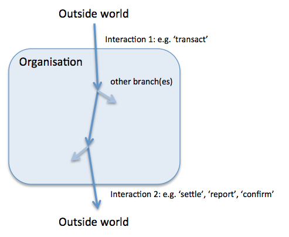
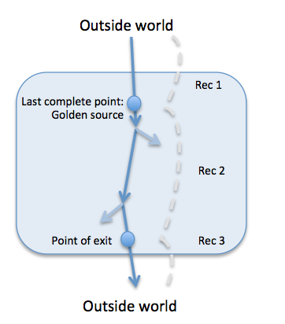
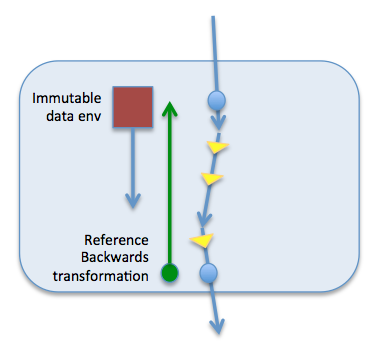

Principles of completeness and accuracy
When looking at putting proper controls around a data flow within an organisation, we are often asked to honour ‘The Prinnciples of completeness and Accuracy’. When there are several or many systems involved in the data flow, it’s often difficult to see how to achieve that.
Completeness
..means that the data set at the end point of the flow is the expected subset of the data set at the start of the flow. Subset because items may be filtered or diverted into other flows for legitimate reasons.
Let’s look at an example flow…  It’s important to realise that ‘truth’ can’t exist in isolation, but can only exist at the points of interaction with the outside world (with suitable processes for both sides to bilaterally agree on the truth).
As data flows in and down through the organisation, it may branch. These are filter points - the places where data items can get lost. The point immediately upstream of all branches, the last point of completeness is a key juncture in a given flow.  Also the point where the outside world is again interacted with again, the exit point is again key. Once we have these points, it’s clear what reconciliations are needed between the two internal points of truth (and to the outside world to establish truth at the boundaries).
This is how we get to completeness.
Accuracy
.. means that for the expected subset at the end of the flow, each item has been transformed along the way as we would have expected.
It’s a little bit harder to see how to achieve this. As data flows between the last point of completeness and the exit point, it will typically be transformed multiple times by the systems that it passes through. Some transformations are format transformations only, some are enrichments and some are inherently lossy. How do you know that the data you got out the end is the same that was put in the top?
This approach may help..  In the picture, the yellow arrows indicate data transformations.
The core approach is to verify that the output is the same as the input by doing a backwards transformation (as part of reconciliation 2 from the previous picture). Since some of the transformations will involve looking up one field in data environment, we need to ‘gather’ that data environment as the data flows down and make it (immutably) available to backwards transformation. This is why having any systems that supply part of the data environment as immutable is such a good idea - it’s now possible to make definite statements by reversing out the look up replacements that were done as the data flowed down.
To be a technical for a moment, the pattern of collecting an immutable data environment and then chain a series of transformation functions that use that environment, and only that environment to support some of the transformations, has a name in programming - the Reader Monad - and will be familiar to anyone who has ever dabbled in writing a compiler, for example.
Of course some lookups are inherently lossy. For example, if you can had the specific model of a car and from that looked up and replaced with the brand. In that case the reverse transformation can only get back to a range of possible alternatives. With several transformations, the set of permutations can quickly grow very large.
A way of controlling the permutations is to be able to examine each transformation stage one at a time as you run them backwards. If we make the each data item in flow, immutable - so no mutable in place is allowed, only the appending of new versions, that the set of possible starting values will be smaller at each stage. In this approach, validating that the item at stage i, could possibly have come from stage i-1 is simpler. The ability to reverse out the transformations step by step also allows for easier diagnosis of something that went wrong.
In the picture, I termed the backwards transformation as ‘reference’. What this means is that this piece of code is not the same piece of code as forwards transformers. It may be written by a separate team and serves that an independent check that the forwards transformations are in fact, correct.